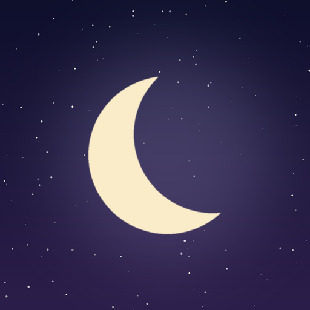

Sleep Archives Studio
Automatische videoproductie op de pc
Dashboard
Planning
Video's
Logboek
Instellingen
Laatste update: …
Automatisering
Automatisch
Dashboard
Video's
Scripts en planning
Beelden
Stem en muziek
Montage
YouTube upload
Fouten en meldingen
0
Kanaalcijfers
Automatisering
Sleep Archives
YouTube-kanaal
verbonden
Kanaalstatus
…
Geplande video's
…
ingepland op YouTube
Succesvolle runs
…
laatste 30 dagen
Fouten
…
laatste 3 dagen
Automatisch videoproces
Huidige taak
Deze week
Kanaalcijfers
laatste 7 dagen
Recente video's
Systeemlog
live
Fouten en meldingen
Komende video's
Automatische taken
Vaste instellingen